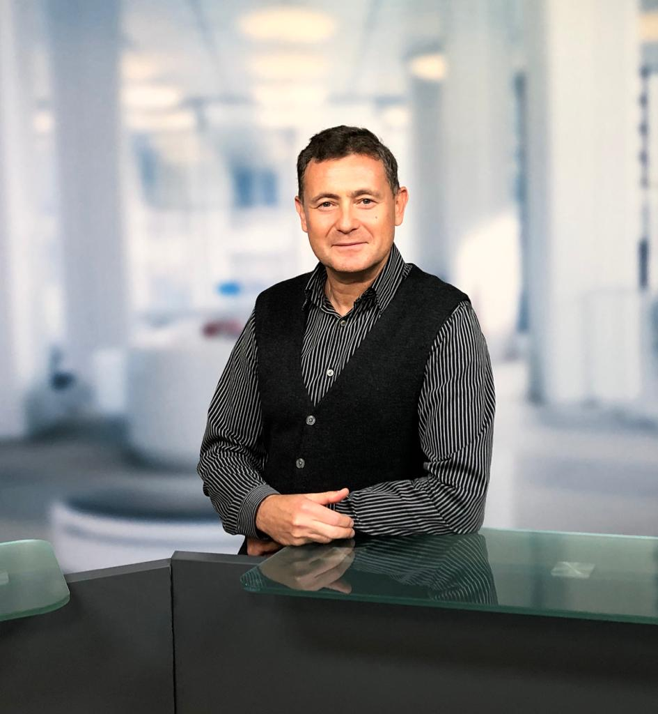

30+ Jahre Erfahrung an der Schnittstelle von Architektur, Cloud und Innovation. Von der Whiteboard-Skizze bis zum produktiven System – ich baue das, was bleibt.

Erfahrung allein reicht nicht – es braucht die Fähigkeit, Komplexität zu beherrschen, Teams zu führen und Systeme zu bauen, die skalieren.
iSAQB-zertifiziert, über 900 Personentage in serviceorientierten IT-Architekturen. Von SOA bis Event-Driven – ich entwerfe Systeme, die unter echtem Last-Druck funktionieren.
AWS Certified Solutions Architect, CKAD, Terraform Associate. Kubernetes, OpenShift, Helm – ich betreibe Container-Plattformen im Enterprise-Maßstab, nicht nur in der Sandbox.
1300+ PT mit Apache Kafka, Flink, Spark. Ich baue Event-Streaming-Architekturen, die Millionen von Ereignissen pro Tag verarbeiten – zuverlässig, skalierbar, nachvollziehbar.
Scrum Master, technischer Projektleiter, Trainer – ich führe Teams mit klarer Kommunikation, treffe architektonische Entscheidungen und entwickle Entwickler weiter.
OAuth2, Keycloak, JAAS, SSO – Sicherheitsarchitektur ist kein Afterthought, sondern integraler Bestandteil meiner Lösungen. 1100+ PT in Identity & Access Management.
M.Sc. Mathematische Physik – ich löse Probleme analytisch. ML/DL-Erfahrung mit TensorFlow, Keras, Scikit-Learn. Performance-Engpässe finde ich dort, wo andere aufgeben.
Breite Technologiebasis – tief verankert in jedem Bereich.
Über 1500+ Personentage in Container-Orchestrierung, CI/CD und Cloud-Infrastruktur bei Deutschen Blue-Chip-Unternehmen.
3.000+ Personentage in Java Enterprise-Entwicklung. Von J2EE über Spring Boot bis Quarkus Cloud-Native – ich beherrsche den gesamten Stack.
1300+ Personentage mit Apache Kafka. Ich baue Event-Driven Architekturen, die unter realem Produktionsdruck performen.
4000+ Personentage – 25+ Jahre Datenbankexpertise. Von Oracle PL/SQL über PostgreSQL bis NoSQL in der Cloud.
Full-Stack-Kompetenz: Angular, React, TypeScript – plus Grafana Custom Plugins und Dashboard-Entwicklung.
Mathematisch fundiert durch M.Sc. in Mathematischer Physik. Praktische ML-Erfahrung in Produktionssystemen – Anomalieerkennung, Echtzeit-Analyse, Prognose.
Kein Berater, der Folien schreibt und verschwindet – sondern einer, der liefert.
Durch 30 Jahre Erfahrung in Logistik, Pharma, Telekom, Banking und Versicherung kennen ich die Muster. Kein monatelanges Einarbeiten – ich liefere vom ersten Sprint an.
Als Dev Lead oder Architekt halte ich die technische Vision zusammen. Code Reviews, Architekturentscheidungen, Eskalationen – ich überbrücke Fachbereich und Entwicklung.
Projekte bei Deutsche Bahn, Deutsche Telekom, Commerzbank, Deutsche Bank, Lufthansa – ich weiß, wie Lösungen im echten Enterprise-Umfeld funktionieren müssen.
Technisch präzise mit dem Team, klar und verständlich mit dem Management. Ich moderiere, trainiere und präsentiere – auf Deutsch, Englisch und Russisch.
Ein Auszug aus über 30 abgeschlossenen Engagements bei führenden deutschen und internationalen Unternehmen.
Skalierbare Lösung zur Datenspeicherung und -abfrage in AWS. Konsolidierung aus RabbitMQ, Kafka, MQTT, REST. Echtzeit-Monitoring mit OpenSearch/Kibana, CloudWatch, Grafana.
Aufbau einer eigenen Cloud-Plattform, Migration von VMs in Container, Kubernetes-Cluster-Management, Kong API-Gateway-Integration, CI/CD-Optimierung.
Datenkonsolidierung aus Kafka, RabbitMQ, Cassandra, Aurora. Anomalieerkennung mit ML (TensorFlow, Keras). State-Management mit Apache Flink und Spark.
Aufbau einer vollständigen CD-Plattform in der Telekom Cloud. Chef, Ansible, Puppet, Jenkins, OpenStack, OpenShift. 440 Personentage im Enterprise-Maßstab.
ESB-basierte Integrationsplattform mit ELK-Stack als zentralem Log-Management-Tool. BPMN 2.0, WebSphere ESB, JBoss ESB, SAML 2.0, CI/CD.
Kontinuierliche Investition in das eigene Wissen – seit über 25 Jahren.
"Der Berater ist in einer sehr kritischen Projektphase in das bestehende Team eingetreten und hat sich sehr schnell in die Teamstruktur eingefunden. Er entwickelte ein generisches Framework für Performance- und Lasttests unserer hochkomplexen J2EE-Anwendung. Das Ergebnis ist ein vollständiges innovatives Produkt zur Performancemessung. Mit seiner Leistung waren wir stets außerordentlich zufrieden."
"Herr Kantor verfügt über ein äußerst umfassendes und detailliertes Fachwissen sowohl im Testmanagement als auch in der Softwareprogrammierung, und er wendet die vorhandenen Methoden und Techniken jederzeit sehr wirksam in der Praxis an."
"Herr Kantor hat durch sein hohes Engagement, sein fundiertes Fachwissen und seine außergewöhnliche Belastbarkeit in entscheidendem Maße zur Lösung komplexer Problemstellungen beigetragen. Sein Auftreten war stets korrekt und verbindlich."
"Herr Kantor hat das Projekt NWM der SBB Cargo als Testmanager höchst professionell unterstützt. Er konnte seine breite Erfahrung erfolgreich einbringen. Für die Führung des Testteams, den methodischen Aufbau der Testaktivitäten sowie das Reporting gegenüber der Gesamtprojektleitung trug er die alleinige Verantwortung."
Ich freue mich auf spannende Herausforderungen in den Bereichen Architektur, Cloud-Native-Entwicklung und technische Führung. Sprechen Sie mich an.